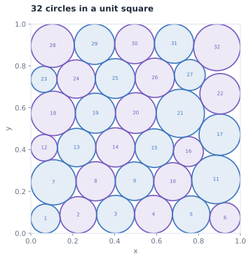

- PREVIOUS BEST
- 2.939573
- EVODUET
- 2.939573
- OBJECTIVE
- Sum of radii ↑
- REPORTED RUN COST
- $42.32


Replay sum of radii: 2.939572771208. The replay checks all 32 circle radii, unit-square boundaries, and pairwise non-overlap constraints. Recorded paper score: 2.939572771209.
The run, at a glance.
Best-so-far search-time evaluator score ↑
Actual recorded scores · higher is better
The line follows the best recorded score. The score is the benchmark’s search-time metric; the native final objective is reported separately above. Scores are actual evaluator outputs, not document-score predictions.
The complete program.
Python · 455 source lines
The archived candidate, unchanged. Run it with the original task harness and dependencies; benchmark-provided interfaces and data are required.
# EVOLVE-BLOCK-START
"""Constructor-based circle packing for n=32 circles"""
import numpy as np
def construct_circles():
"""Optimize 32 centers and radii from several staggered six-row layouts."""
from scipy.optimize import minimize, linprog
n = 32
layouts = (
# Six-row staggered layouts, including several asymmetric variants.
(5, 6, 5, 5, 5, 6),
(6, 5, 5, 6, 5, 5),
(5, 5, 6, 5, 6, 5),
(6, 6, 5, 5, 5, 5),
(6, 5, 6, 5, 5, 5),
(6, 5, 5, 5, 6, 5),
(6, 5, 5, 5, 5, 6),
(5, 6, 6, 5, 5, 5),
(5, 5, 5, 6, 6, 5),
# Five-row layouts have larger vertical freedom and can form
# nonuniform-radius packings unavailable to six-row starts.
(6, 7, 6, 7, 6),
(7, 6, 7, 6, 6),
(6, 6, 7, 6, 7),
)
pairs = np.asarray(
[(i, j) for i in range(n) for j in range(i + 1, n)],
dtype=int,
)
def margins(v):
p = v.reshape(n, 3)
x, y, r = p.T
a, b = pairs.T
d = p[a, :2] - p[b, :2]
return np.r_[
x - r, y - r, 1.0 - x - r, 1.0 - y - r,
np.sum(d * d, axis=1) - (r[a] + r[b]) ** 2,
]
rng = np.random.default_rng(1947)
def safe_initial_radii(points):
"""Build strictly feasible radii from wall and nearest-center clearances."""
wall = np.min(np.column_stack((
points[:, 0], points[:, 1],
1.0 - points[:, 0], 1.0 - points[:, 1]
)), axis=1)
delta = points[:, None, :] - points[None, :, :]
dist = np.sqrt(np.sum(delta * delta, axis=2))
np.fill_diagonal(dist, np.inf)
near = np.min(dist, axis=1)
return 0.48 * np.minimum(wall, near)
best = None
best_sum = -np.inf
for layout in layouts:
centers = []
for row, count in enumerate(layout):
y = (row + 0.5) / 6.0
shift = 0.012 if row & 1 else -0.012
for col in range(count):
centers.append(((col + 0.5) / count + shift, y))
centers = np.asarray(centers)
starts = [
np.c_[centers, np.full(n, 1.0 / 12.0 - 1e-5)]
]
# Use both aggressive equal-radius starts and strictly feasible
# radius starts. The latter avoid wasting SLSQP iterations repairing
# overlap violations in strongly perturbed geometries.
for k in range(16):
sigma = 0.004 + 0.0025 * (k % 5)
radius = 0.054 + 0.0025 * (k % 4)
q = np.clip(
centers + rng.normal(0.0, sigma, centers.shape),
0.035,
0.965,
)
starts.append(np.c_[q, np.full(n, radius)])
if k % 3 == 0:
starts.append(np.c_[q, safe_initial_radii(q)])
for start in starts:
result = minimize(
lambda v: -np.sum(v[2::3]),
start.ravel(),
method="SLSQP",
bounds=[(0.0, 1.0), (0.0, 1.0), (1e-8, 0.25)] * n,
constraints={"type": "ineq", "fun": margins},
options={"maxiter": 1000, "ftol": 2e-10, "disp": False},
)
candidate = result.x.reshape(n, 3)
value = float(np.sum(candidate[:, 2]))
if np.min(margins(candidate)) >= -3e-7 and value > best_sum:
best, best_sum = candidate, value
# Search additional basins using feasible jittered and coherently deformed
# versions of the strongest row-layout solution. Coherent deformation is
# useful because independently moving a circle can destroy many contacts.
if best is not None:
base = best[:, :2].copy()
for k in range(30):
if k % 3 == 0:
# Small affine shear/stretch around the square center.
a = rng.normal(0.0, 0.018)
b = rng.normal(0.0, 0.018)
sx = 1.0 + rng.normal(0.0, 0.025)
sy = 1.0 + rng.normal(0.0, 0.025)
q = base - 0.5
q = np.column_stack((
sx * q[:, 0] + a * q[:, 1],
sy * q[:, 1] + b * q[:, 0],
)) + 0.5
q += rng.normal(0.0, 0.0025, q.shape)
else:
sigma = 0.0025 + 0.0025 * (k % 6)
q = base + rng.normal(0.0, sigma, base.shape)
q = np.clip(q, 0.015, 0.985)
trial = np.c_[q, safe_initial_radii(q)]
result = minimize(
lambda v: -np.sum(v[2::3]),
trial.ravel(),
method="SLSQP",
bounds=[(0.0, 1.0), (0.0, 1.0), (1e-8, 0.25)] * n,
constraints={"type": "ineq", "fun": margins},
options={"maxiter": 1250, "ftol": 1e-11, "disp": False},
)
candidate = result.x.reshape(n, 3)
if np.min(margins(candidate)) >= -3e-7:
value = float(np.sum(candidate[:, 2]))
if value > best_sum:
best, best_sum = candidate, value
# Threshold-accepting walk over nearby packing basins. Unlike the
# incumbent, the walker may accept a small decrease in sum of radii,
# allowing it to cross shallow barriers between contact graphs.
if best is not None:
walker = best.copy()
walker_sum = float(np.sum(walker[:, 2]))
for k in range(32):
# Cycle from exploratory to conservative thresholds.
phase = k % 8
threshold = 8e-4 * (0.35 ** phase)
q = walker[:, :2].copy()
if k % 4 == 0:
# Coherent affine deformation preserves the broad structure.
a, b = rng.normal(0.0, 0.025, 2)
sx, sy = 1.0 + rng.normal(0.0, 0.035, 2)
z = q - 0.5
q = np.column_stack((
sx * z[:, 0] + a * z[:, 1],
sy * z[:, 1] + b * z[:, 0],
)) + 0.5
q += rng.normal(0.0, 0.002, q.shape)
elif k % 4 == 1:
# Small rigid rotation around the square centre.
angle = rng.normal(0.0, 0.035)
c, s = np.cos(angle), np.sin(angle)
z = q - 0.5
q = np.column_stack((
c * z[:, 0] - s * z[:, 1],
s * z[:, 0] + c * z[:, 1],
)) + 0.5
q += rng.normal(0.0, 0.0025, q.shape)
else:
sigma = 0.002 + 0.002 * (k % 5)
q += rng.normal(0.0, sigma, q.shape)
q = np.clip(q, 0.015, 0.985)
trial = np.c_[q, safe_initial_radii(q)]
result = minimize(
lambda v: -np.sum(v[2::3]),
trial.ravel(),
method="SLSQP",
bounds=[(0.0, 1.0), (0.0, 1.0), (1e-8, 0.25)] * n,
constraints={"type": "ineq", "fun": margins},
options={"maxiter": 1300, "ftol": 1e-11, "disp": False},
)
candidate = result.x.reshape(n, 3)
if np.min(margins(candidate)) < -3e-7:
continue
value = float(np.sum(candidate[:, 2]))
if value > best_sum:
best, best_sum = candidate.copy(), value
# Walk locally through near-optimal states, but periodically
# return to the record if a trial falls too far behind.
if value >= walker_sum - threshold:
walker, walker_sum = candidate.copy(), value
elif value < walker_sum - 3.0 * threshold:
walker, walker_sum = best.copy(), best_sum
if best is None:
row_counts = (5, 5, 5, 5, 6, 6)
centers = np.asarray([
((col + 0.5) / count, (row + 0.5) / 6.0)
for row, count in enumerate(row_counts)
for col in range(count)
])
return np.c_[centers, np.full(n, (1.0 / 12.0) * (1.0 - 1e-7))]
def optimize_fixed_radii(points):
"""Maximize the sum of radii for fixed centers using a linear program."""
upper = np.min(
np.column_stack((
points[:, 0], points[:, 1],
1.0 - points[:, 0], 1.0 - points[:, 1]
)),
axis=1,
)
# For fixed centers, every non-overlap condition is linear in r:
# r_i + r_j <= ||p_i-p_j||.
m = n * (n - 1) // 2
A = np.zeros((m, n))
b = np.empty(m)
k = 0
for i in range(n):
for j in range(i + 1, n):
A[k, i] = 1.0
A[k, j] = 1.0
b[k] = np.linalg.norm(points[i] - points[j])
k += 1
result = linprog(
-np.ones(n),
A_ub=A,
b_ub=b,
bounds=[(1e-10, float(u)) for u in upper],
method="highs",
)
if not result.success:
return best
candidate = np.column_stack((points, result.x))
# Remove only a negligible numerical margin after the LP.
candidate[:, 2] *= 1.0 - 2e-10
if np.min(margins(candidate)) >= -1e-10:
return candidate
return best
refined = optimize_fixed_radii(best[:, :2])
if np.sum(refined[:, 2]) > np.sum(best[:, 2]):
best = refined
def slp_polish(state):
"""Improve centers and radii through feasible tangent-plane LP steps."""
p = state[:, :2].copy()
r = state[:, 2].copy()
# Create a tiny strict-feasibility buffer so that the zero step
# remains feasible despite LP/SLSQP roundoff.
r *= 1.0 - 2e-8
for trust in (0.012, 0.008, 0.005, 0.003, 0.0015, 0.0007):
for _ in range(8):
nv = 3 * n
rows = []
rhs = []
# Box constraints, written in delta variables.
for i in range(n):
row = np.zeros(nv)
row[3 * i + 0] = -1.0
row[3 * i + 2] = 1.0
rows.append(row)
rhs.append(p[i, 0] - r[i])
row = np.zeros(nv)
row[3 * i + 1] = -1.0
row[3 * i + 2] = 1.0
rows.append(row)
rhs.append(p[i, 1] - r[i])
row = np.zeros(nv)
row[3 * i + 0] = 1.0
row[3 * i + 2] = 1.0
rows.append(row)
rhs.append(1.0 - p[i, 0] - r[i])
row = np.zeros(nv)
row[3 * i + 1] = 1.0
row[3 * i + 2] = 1.0
rows.append(row)
rhs.append(1.0 - p[i, 1] - r[i])
# Tangent lower bounds for every pairwise distance.
for i in range(n):
for j in range(i + 1, n):
diff = p[i] - p[j]
d = float(np.linalg.norm(diff))
if d < 1e-14:
continue
u = diff / d
row = np.zeros(nv)
row[3 * i + 0] = -u[0]
row[3 * i + 1] = -u[1]
row[3 * j + 0] = u[0]
row[3 * j + 1] = u[1]
row[3 * i + 2] = 1.0
row[3 * j + 2] = 1.0
rows.append(row)
rhs.append(d - r[i] - r[j])
bounds = []
for i in range(n):
bounds.extend([
(-trust, trust),
(-trust, trust),
(-float(r[i]) + 1e-11, 0.25 - float(r[i])),
])
lp = linprog(
np.tile([0.0, 0.0, -1.0], n),
A_ub=np.asarray(rows),
b_ub=np.asarray(rhs),
bounds=bounds,
method="highs",
)
if not lp.success:
break
step = lp.x.reshape(n, 3)
gain = float(np.sum(step[:, 2]))
if gain <= 1e-11:
break
p += step[:, :2]
r += step[:, 2]
out = np.column_stack((p, r))
# Remove only a negligible common factor for strict evaluator
# feasibility after the final floating-point LP step.
out[:, 2] *= 1.0 - 3e-9
return out
polished = slp_polish(best)
if np.min(margins(polished)) >= -2e-9:
if np.sum(polished[:, 2]) > np.sum(best[:, 2]):
best = polished
# SLP changes the centers, so solve the fixed-center radius LP again.
# This restores exact radius optimality for the polished geometry.
polished_radii = optimize_fixed_radii(polished[:, :2])
if np.sum(polished_radii[:, 2]) > np.sum(best[:, 2]):
best = polished_radii
# Perform additional small-basin restarts from the polished incumbent.
# These perturbations are deliberately much smaller than the earlier
# exploratory walk, targeting improvements that SLSQP may miss because
# the incumbent lies on a nearly degenerate contact graph.
polished_base = best[:, :2].copy()
for k in range(120):
q = polished_base.copy()
if k % 10 == 0:
# Apply a coherent deformation to preserve the broad packing
# while changing the active contact graph.
z = q - 0.5
shear_x, shear_y = rng.normal(0.0, 0.016, 2)
scale_x, scale_y = 1.0 + rng.normal(0.0, 0.016, 2)
q = np.column_stack((
scale_x * z[:, 0] + shear_x * z[:, 1],
scale_y * z[:, 1] + shear_y * z[:, 0],
)) + 0.5
q += rng.normal(0.0, 0.0012, q.shape)
else:
# A wider schedule occasionally leaves the current contact basin,
# while the smallest scales continue to refine tangent neighbors.
sigma = 0.0002 + 0.0005 * (k % 10)
q += rng.normal(0.0, sigma, q.shape)
q = np.clip(q, 0.012, 0.988)
trial = np.c_[q, safe_initial_radii(q)]
result = minimize(
lambda v: -np.sum(v[2::3]),
trial.ravel(),
method="SLSQP",
bounds=[(0.0, 1.0), (0.0, 1.0), (1e-8, 0.25)] * n,
constraints={"type": "ineq", "fun": margins},
options={"maxiter": 1500, "ftol": 5e-12, "disp": False},
)
candidate = result.x.reshape(n, 3)
if np.min(margins(candidate)) < -3e-7:
continue
# Re-optimize the radii exactly for the newly found centers. This
# removes any SLSQP radius suboptimality before comparing incumbents.
candidate_lp = optimize_fixed_radii(candidate[:, :2])
if np.min(margins(candidate_lp)) >= -1e-8:
if np.sum(candidate_lp[:, 2]) > np.sum(best[:, 2]):
best = candidate_lp
return best
def compute_max_radii(centers):
"""
Compute the maximum possible radii for each circle position
such that they don't overlap and stay within the unit square.
Args:
centers: np.array of shape (n, 2) with (x, y) coordinates
Returns:
np.array of shape (n) with radius of each circle
"""
n = centers.shape[0]
radii = np.ones(n)
# First, limit by distance to square borders
for i in range(n):
x, y = centers[i]
# Distance to borders
radii[i] = min(x, y, 1 - x, 1 - y)
# Then, limit by distance to other circles
# Each pair of circles with centers at distance d can have
# sum of radii at most d to avoid overlap
for i in range(n):
for j in range(i + 1, n):
dist = np.sqrt(np.sum((centers[i] - centers[j]) ** 2))
# If current radii would cause overlap
if radii[i] + radii[j] > dist:
# Scale both radii proportionally
scale = dist / (radii[i] + radii[j]) * 0.99 # 0.99 for safety margin
radii[i] *= scale
radii[j] *= scale
return radii
# EVOLVE-BLOCK-END
# This part remains fixed (not evolved)
def run_code():
"""Run the circle packing constructor for n=32"""
circles = construct_circles()
sum_radii = float(np.sum(circles[:, 2]))
return circles, sum_radii
Program details and provenance
Circle coordinates are a fresh replay of the archived source. The replay agrees with the recorded score at displayed precision.
Recorded score: 2.9395727712093938 · reference: 2.9395727712101474 · seed: 42 · final iteration: 100.
Program ID: a9c6b2ae-dbaa-47fa-87cd-9faf604f7bd9
Source SHA-256: 9aeeec627e4885b7e464b49cef877dcae2f0f008f3b76ea6de3aed9a9bd3de21
Score-history SHA-256: 5b9eff167e108748ff940e2af9e288b05322c85b638e7f3ba5aca22c79fef01a
The source download is byte-for-byte identical to the paper archive. The interactive views operate on recorded outputs or the labeled replay, without executing the program in your browser.